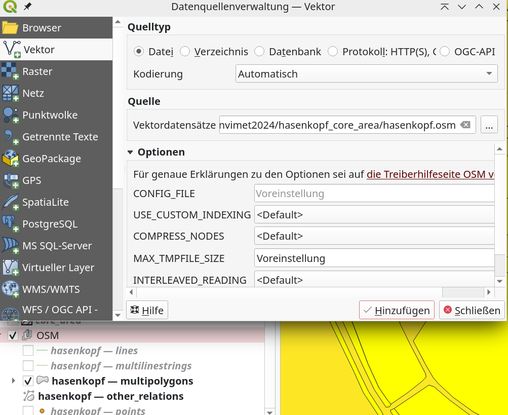
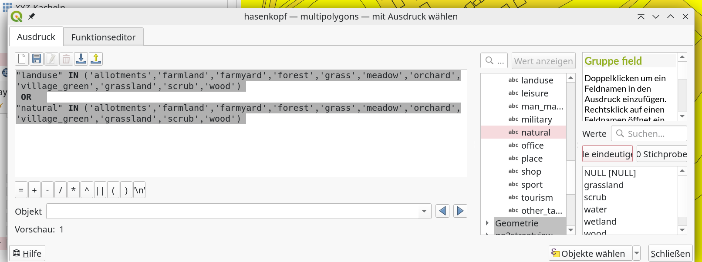
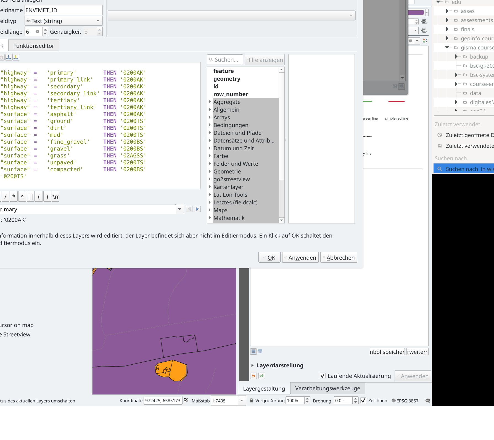
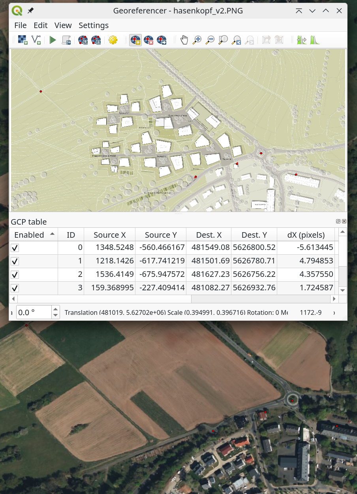
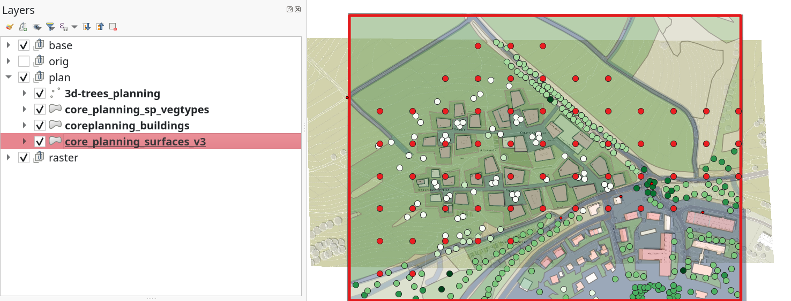

After the first attempts - specifically after the technical example simulations as well as a rough structuring of the research questions, it is now necessary to design a concrete approach.
Goals
Design and impementation of a concrete approach.
Things you need
- Course Data Server You will find here all kinds of data, literature and tutorials.
- For specific project data see Download of the data
- ENVI-met software
- Current LTR Qgis Installation
- Installation of Plugins
- Geodata to ENVI-met
- OSMDownloader
- QuickOSM
- Installation of Plugins
Assignment
Design a concrete modeling approach and a suitable associated modeling concept to assess the performance of Envimet to simulate how are the effects of the Hasenkopf build up plans affecting the fresh air support of Marburg. Consider the following aspects: * abiotic endowment of the model domain (relief, soil, site location). * biotic features of the model domain (simple/3D vegetation) * technical model domain (x,y,z extent, time steps nesting) * appropriate meteorology for model initialization (ideal, real values) * Validation strategy
Hands on
The preparation of the modelling environment for an Envi_met model run can be as complex as desired, but the following criteria should always be kept in mind:
- the size and desired resolution of the model domain (depending on the research question AND computing costs)
- scientific or planning level of detail of the research question
- focus of the modelling (wind field, plant respiration, micrometeorological parameters).
The input data sources must be selected according to these factors. In hilly terrain, a high resolution digital terrain model or digital surface model is essential. In addition, at least a rough estimate of land use and soil type is required. In addition the three-dimensional structure of the model requires at least good estimates of vegetation and building heights in the selected model area.
For the modeling of cold air drainage (i.e. fresh air production) in the Hasenkopf area, the terrain, land use and meteorologically critical situations are of central importance. If you do not want to collect all the data in the field manually (which may be a sensible approach), Open Street Map data and aerial images are particularly useful for land use and possible follow-up surveys. Terrain data is now available in high resolution in the 1m range for large parts of Europe and the world. This data must be downloaded and prepared accordingly (for the Envi_met logic). There is now a powerful and largely functional plugin for QGIS ‘Geodata to Envi_met’, which intuitively specifies how this data is to be organized.
For the above question of cold air production, the freely available data from the State of Hesse and the Hessian Administration for Land Management and Geoinformation, as well as the Openstreetmap data, are well suited. In addition, some planning maps have to be digitised manually.
Download of the data
- Digital Elevation Model DEM and Digital Surface Model DSM files relevant for Marburg can be downloaded from the GDS website of the Hessian Administration for Land Management and Geoinformation
- For downloading the OSM data it is recommended to use the OSMDownloader extension to QGIS. It simply provides the ability to draw a rectangle and download the complete and currently available OSM data to a file named
hasenkopf.osm. - If the data has to be digitised manually, it is advisable to use an up-to-date aerial photograph from Bing or Google. These can be easily integrated via XYZ tiles
- The planning data for the development and sealing were taken from page 23 of the presentation of the winning design via screenshot.
Data preprocessing
Starting with the OSM base data. Open the downloaded OSM file using the vector import dialogue box in a new group called OSM.

Now open the attribute table and the function editor and select all natural and land use areas.
Main keys: landuse natural with the values:
'allotments','farmland','farmyard','forest','grass','meadow','orchard','village_green','grassland','scrub','wood'This can be done very easily with the following expression:
"landuse" IN ('allotments','farmland','farmyard','forest','grass','meadow','orchard','village_green','grassland','scrub','wood')
OR
"natural" IN ('allotments','farmland','farmyard','forest','grass','meadow','orchard','village_green','grassland','scrub','wood')

Press Select Objects Button and Export selected Values only (do not forget to assign the correct projection EPSG:32632) and name it vegtypes.gpkg.
Next do the same with the hasenkopf — multilinestrings
Main key: highway with the values:
primary','primary_link','residential','secondary','secondary_link','tertiary' 'tertiary_link','track'Press Select Objects Button and Export selected Values only (do not forget to assign the correct projection EPSG:32632) and name it surftypes_roads_ml.gpkg.
Polygons to Envi_met vegetation
In the next step, Envimet IDs are assigned to the vegetation polygons, which are either taken from the Envimet database or created by the user. This is done very simply as follows: Open the vegtypes.gpkg attribute table and then the field calculator. Create a new field with 6 alphanumeric characters and the name ENVIMET_ID. Then process the following expression. This assigns the corresponding vegetation database identifier to the new ‘ENVIMET_ID’ field.
CASE
CASE
WHEN "landuse" = 'grass' THEN '000000'
WHEN "landuse" = 'meadow' THEN '000000'
WHEN "landuse" = 'farmyard' THEN '0201H4'
WHEN "landuse" = 'forest' THEN '0000SM'
WHEN "landuse" = 'allotments' THEN '0201H4'
WHEN "landuse" = 'orchard' THEN '000051'
WHEN "natural" = 'grassland' THEN '000000'
WHEN "natural" = 'wood' THEN '0000SM'
WHEN "natural" = 'scrub' THEN '0100H2'
WHEN "landuse" = 'farmland' THEN '02AGSS'
WHEN "landuse" = 'residental' THEN '02AGSS'
WHEN "landuse" = 'industrial' THEN '0200AK'
ELSE '000000'
END
Save the file.
On the same file, we need to edit the non-vegetated surfaces in a corresponding way:
CASE
WHEN "landuse" = 'farmland' THEN '02AGSS'
WHEN "landuse" = 'residental' THEN '02AGSS'
WHEN "landuse" = 'industrial' THEN '0200AK'
ELSE '0200AK'Press Select Objects Button and Export selected Values only (do not forget to assign the correct projection EPSG:32632) and name it polygons_surfaces.gpkg.
Line surface types
We need polygon data for the spatial setup of the envimet model domain. Line data is one-dimensional, so a simple approach is to buffer roads according to their priority. Therefore we buffer the different road types with 8m (primary), 5m (secondary), 4m (tertiary) and 2.5m (tracks).
Then process the following expression to assign the ENVIMET_IDs:
CASE
WHEN "highway" = 'primary' THEN '0200AK'
WHEN "highway" = 'primary_link' THEN '0200AK'
WHEN "highway" = 'secondary' THEN '0200AK'
WHEN "highway" = 'secondary_link' THEN '0200AK'
WHEN "highway" = 'tertiary' THEN '0200AK'
WHEN "highway" = 'tertiary_link' THEN '0200AK'
WHEN "surface" = 'asphalt' THEN '0200AK'
WHEN "surface" = 'ground' THEN '0200TS'
WHEN "surface" = 'dirt' THEN '0200TS'
WHEN "surface" = 'mud' THEN '0200TS'
WHEN "surface" = 'fine_gravel' THEN '0200BS'
WHEN "surface" = 'gravel' THEN '0200BS'
WHEN "surface" = 'grass' THEN '02AGSS'
WHEN "surface" = 'unpaved' THEN '0200TS'
WHEN "surface" = 'compacted' THEN '0200BS'
ELSE '0200TS'
ENDSave the file as line_surfaces.gpgk.
Next merge polygons_surfaces.gpkg and line_surface.gpgk into all_surfaces.gpgk.
Buildings
Use the OSM polygon data again and select all buildings that do not have the value NULL.
"building" is not NULLSave the file as buildings.gpgk.
We need the heights of the buildings, so we extract the data from the surface height model (SHM) for each building using the zonal statistics tool, which we previously calculated using the raster computer from the difference between the digital surface model (DSM) and the digital elevation model (DEM).
Check for missing data
Hide all data and activate only the generated vegetation, surface and building data. Check in the following order:
- is there still surface data without information?
- are there vegetation areas without information?
- are all buildings present?
- Regarding 1: It is likely that important information is missing, especially for the surfaces. All streets and sealed surfaces should be present here, but the surfaces under vegetation, etc. have no information. The easiest way is to assign a soil type code to this total area. This is most easily done by calculating a symmetric difference between the surface data and the model area; the resulting polygon is a negative of the existing surfaces. This polygon is then assigned a field ‘ENVIMET_ID’ and the corresponding soil value is entered. The file is then merged with the existing surface file (merge tool).
- Regarding 2: If areas are unclear, they must be digitized manual. To do this, open the Bing/Google aerial map and open the corresponding vegetation file, make it editable and re-digitize it. It is important that the correct ENVIMET_ID is assigned at the end of each polygon.
- Regarding 3: Simply compare the aerial image to see if all buildings are present in the model area. If not, digitize them again and then use the zonal statistics tool again.
Receptors
So-called receptors can be set up to compare and locally measure continuous values. These work like complex measuring stations in the terrain. To do this, we use the tool [Vector->Research Tools->Regular Points] (https://youtu.be/ExgfFEEgeWA?si=nZWgiZR299VQBAR1). We can, for example, create a point every 100 meters. Points at the edge, in buildings, etc. can then be deleted manually, as they require a considerable amount of additional computing time during the simulation. There should not be many more than 50-60 points… Save the file as receptors.gpkg.
Planning data
Planning data is required to compare the production of fresh air between the actual and planned conditions. The available data can be found in the presentation linked above. We use the following screenshot to record the changes in land use, buildings and vegetation based on this. To do this, the map presentation image must be georeferenced. This is done using the tool Layer->Georeferencer.
The basic approach is to find points (so-called ground control points) in the draft plan that can also be identified in the Bing aerial photograph, for example. Using these points, the image is integrated into the geometry of the GIS data and can then be digitized accordingly.

The basic approach is to find points (so-called ground control points) in the draft plan that can also be identified in the Bing aerial photograph, for example. On the basis of these points, the image is integrated into the geometry of the GIS data and can then be digitized accordingly.
After the georeferencing has been successfully carried out, the deviating structures are now integrated into copies of the respective inventory files by manual digitization. The number of floors is indicated for the buildings and can be adopted with a height of 3 m each. The trees were digitized as 3D plant points and assigned to different standard heights of a standard deciduous tree species, depending on their diameter. Paths are recorded as paved.

Save the files under a unique name in each case, making it clear that the planning layers are meant.
Convert Geodata to envimet
You can now run the Convert Geodata to Envimet] plug-in. Of course, two different models have to be generated: one for the actual state and one for the planned state.
Help
All files, GCP and the model files and simulation control files generated from it, are included in the Envi-met Hasenkopf GIS and Modeldata Archive file.